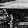

The year has been a good one for the Society (hear, hear). This year our members have put more things on top of other things than ever before. But, I should warn you, this is no time for complacency. No, there are still many things, and I cannot emphasize this too strongly, not on top of other things.
— ‘The Royal Society For Putting Things On Top Of Other Things’ sketch, Monty Python's Flying Circus, programme 18 (1970)

In almost every game, certain objects need to be thought of as on
top of or inside other objects. The library provides actions Insert
and PutOn for placing things inside or on top of something,
and Remove for taking things out of or off the top of something.
Many objects, such as house-bricks, cannot sensibly contain things,
and a designer usually only wants certain specific items ever to have
other things on top of them. In the model world, then, only objects which
the designer has given the container attribute can contain
things, and only those given the supporter attribute
can have items on top.
The packing case brought by our archaeologist hero
to the scene of the ‘Ruins’ (found in the opening location,
the Forest) is a thoroughly typical container:
Object -> packing_case "packing case"
with name 'packing' 'case' 'box' 'strongbox',
initial
"Your packing case rests here, ready to hold any important
cultural finds you might make, for shipping back to
civilisation.",
before [;
Take, Remove, PushDir:
"The case is too heavy to bother moving, as long as
your expedition is still incomplete.";
],
has static container open openable;
A container can hold anything up to 100 items, but
this limit can be modified by giving the container a capacity
property.
Note that the packing case is defined having an
attribute called open. This is essential, because the
library will only allow the player to put things in a container
if it is currently open. (There is no attribute called
closed, as any
container lacking open is
considered closed.) If a container has openable, the
player can open and close it at will, unless it also has locked.
A locked object, whether it be a door or a container,
cannot be opened. But if it has lockable then it can
be locked or unlocked with the key object given in its with_key
property. If with_key is undeclared or equal to nothing,
then no key will fit, but this will not be told to the player. The
actions Open, Close, Lock and
Unlock handle all of this.
•
EXERCISE 15
Construct a musical box with a silver key.
· · · · ·
An object having supporter can have
up to 100 items put on top of it, or, once again, its capacity
value if one is given. An object cannot be both a container
and a supporter at once, and there's no concept of
being “open” or “locked” for supporters.
Here is an example from the Shrine:
Object -> stone_table "slab altar"
with name 'stone' 'table' 'slab' 'altar' 'great',
initial "A great stone slab of a table, or altar, dominates
the Shrine.",
has enterable supporter static;
See §15 for enterable
and its consequences.
· · · · ·
Containers and supporters are able to react to
things being put inside them, or removed from them, by acting on the
signal to Receive or LetGo. For example,
further down in the ‘Ruins’ is a chasm which, perhaps
surprisingly, is implemented as a container:
Object -> chasm "horrifying chasm"
with name 'blackness' 'chasm' 'pit' 'horrifying' 'bottomless',
react_before [;
Jump: <<Enter self>>;
Go: if (noun == d_obj) <<Enter self>>;
],
before [;
Enter: deadflag = true;
"You plummet through the silent void of darkness!";
JumpOver: "It's far too wide.";
],
after [;
Receive: remove noun;
print_ret (The) noun, " tumbles silently into the
darkness of the chasm.";
Search: "The chasm is deep and murky.";
],
has scenery open container;
(Actually the definition will grow in
§23, so that the chasm reacts to an
eight-foot pumice-stone ball being rolled into it.) Note the use of
an after rule for the Search action:
this is because an attempt to “examine” or “look
inside” the chasm will cause this action. Search
means, in effect, “tell me what is inside the container”
and the after rule prevents a message like “There
is nothing inside the chasm.” from misleading the player.
Note also that the chasm ‘steals’ any stray Jump
action in the vicinity using react_before and
converts it into an early death.
•
EXERCISE 16
Make an acquisitive bag which will swallow things up but refuses to
disgorge them.
▲
Receive is sent to an object O when a player
tries to put something in O, or on O. In the rare event
that O needs to react differently to these two attempts,
it may consult the library's variable receive_action
to find out whether ##PutOn or ##Insert
is the cause.
· · · · ·
Not all containment is about carrying or supporting
things. For instance, suppose a machine has four levers. If the
machine is fixed in place somewhere, like a printing press, the
levers could be provided as four further static objects.
But if it is portable, like a sewing machine, we need to make sure
that the levers always move whenever it moves, and vice versa.
The natural solution is to make the lever-objects children of the
machine-object, as though the machine were a container and the
levers were its contents.
However, members of an object which isn't a container
or supporter are normally assumed by the library to be
hidden invisibly inside. In the case of the levers, this would defeat
the point. We can get around this by giving the machine the transparent
attribute, making the levers visible but not removable.
Containers can also be transparent, making
their contents visible even when closed. The items on top of a supporter
are of course always visible, and it makes no sense for a supporter
to be transparent. See §26
for further details on when contents are listed in inventories and
room descriptions.
•
EXERCISE 17
Make a glass box and a steel box, which behave differently when a
lamp is shut up inside them.
•
EXERCISE 18
Make a television set with attached power button and screen.
•▲
EXERCISE 19
Implement a macramé bag hanging from the ceiling, inside
which objects are visible, audible and so forth, but cannot be
touched or manipulated in any way.
▲
The most difficult case to handle is when an object needs to be
portable, and to have sub-objects like lamps and buttons, and
also to be a container in its own right. The solution to this will
have to be left until the “scope addition” rules in
§32, but briefly: an object's
add_to_scope property may contain a list of sub-objects
to be kept attached to it but which are not its children.
•
REFERENCES
Containers and supporters abound in the example games (except
‘Advent’, which is too simple, though see the water-and-oil
carrying bottle). Interesting containers include the lottery-board
and the podium sockets from ‘Balances’ and the
‘Adventureland’ bottle.
•For supporters, the
hearth-rug, chessboard, armchair and mantelpiece of ‘Alice
Through the Looking-Glass’ are typical examples; the
mantelpiece and spirit level of ‘Toyshop’ make a
simple puzzle, and the pile of building blocks a complicated
one; see also the scales in ‘Balances’.